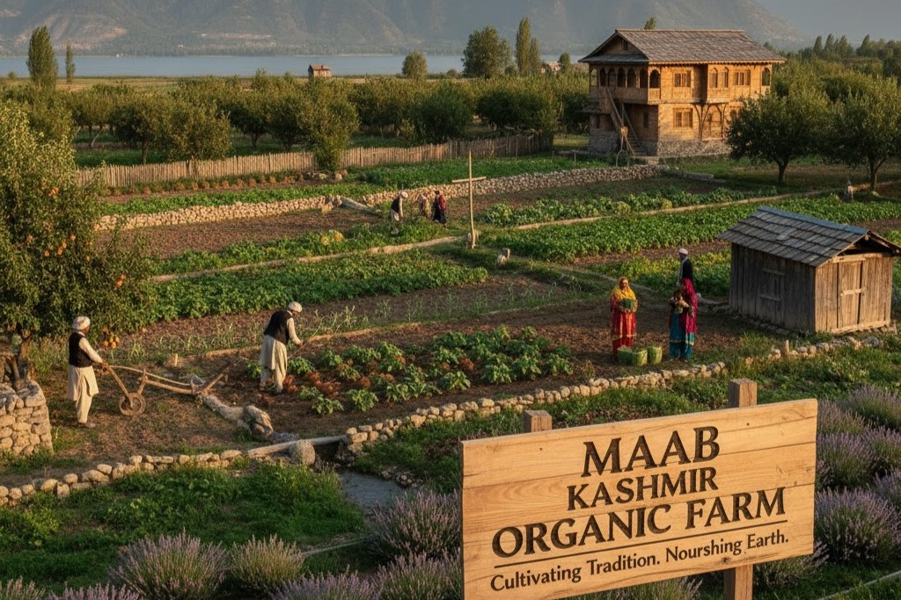
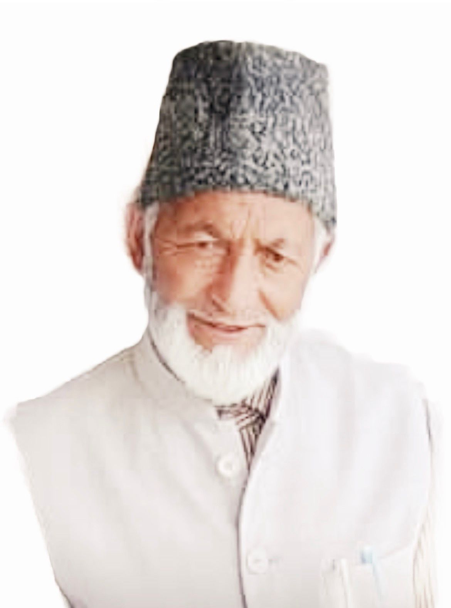
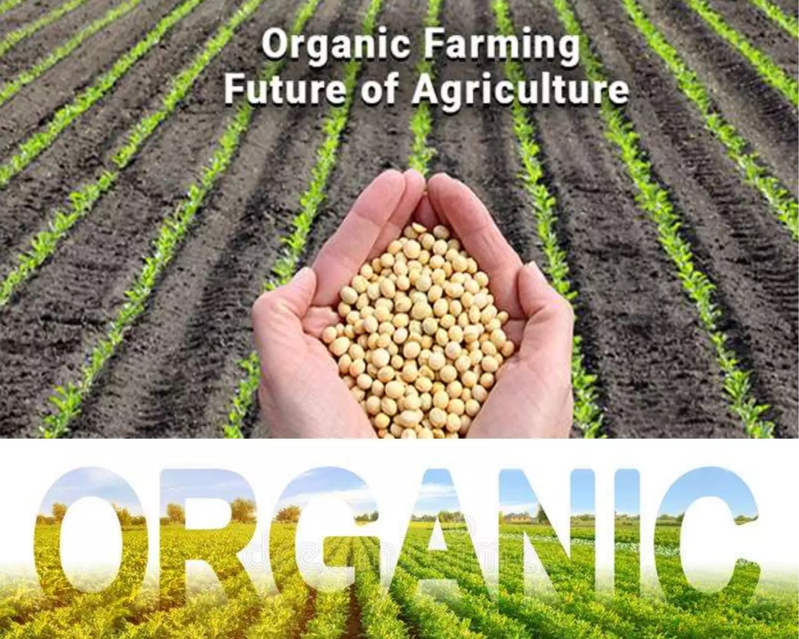

Innovation And Cooperation
MAAB VALLEY FOUNDATION is a grassroots initiative working to transform the rural landscape of Kashmir through sustainable agriculture, organic farming, and rural entrepreneurship
Our mission is to ensure that no farmer is left behind, regardless of land size or resources.
The Foundation recognizes that the challenges faced by small and landless farmers — such as low productivity, lack of access to markets, and limited financial support — can only be overcome through innovation, cooperation, and knowledge-sharing.
It gives me immense pleasure to extend my heartfelt greetings to all visitors of the MAAB VALLEY FOUNDATION. As the Chairman, I feel deeply honored to lead an initiative dedicated to uplifting our rural communities, empowering youth, and promoting sustainable practices that preserve the natural beauty and cultural heritage of our valley.
The MAAB VALLEY FOUNDATION was born from a collective dream — a dream to bring meaningful change to people’s lives through education, organic farming, agrotourism, and community development. Our mission is rooted in compassion, service, and a commitment to creating opportunities that help our people grow with dignity and confidence.
We believe that true progress begins at the grassroots level. By involving farmers, youth, women, and local stakeholders, we aim to build a stronger and more self-reliant community where every individual has the chance to flourish.
As we embark on this transformative journey, I humbly invite everyone to join hands with us — to support, to encourage, and to become partners in creating a brighter and more prosperous future for our valley.
May Almighty Allah guide us, bless our efforts, and help us serve humanity with sincerity and dedication.

With profound gratitude and a deep sense of purpose, I welcome you to the MAAB VALLEY FOUNDATIONMAAB Valley Foundation. This foundation is not just an institution — it is a vision, a movement, and a commitment to transforming lives across our beautiful valley.
When I imagined MAAB VALLEY FOUNDATION, I dreamed of creating a platform that brings people together, empowers our youth, uplifts our farmers, and strengthens rural communities with opportunities, knowledge, and support. Today, that vision is taking shape through the dedication of our team and the trust of our people.
Our mission is rooted in service, sustainability, and empowerment. We aim to promote organic farming, agrotourism, rural livelihoods, education, skill development, and community welfare. We believe that every individual — whether a farmer, a student, or a young entrepreneur — deserves a chance to grow, to be heard, and to succeed.
I firmly believe that real change begins when people join hands with sincerity and a shared purpose. MAAB VALLEY FOUNDATION is that collective effort — a bridge between dreams and possibilities.
As Vice Chairman and Founder, I assure you that our commitment is unwavering. We will continue to work tirelessly for progress, dignity, and development, while staying true to our values of honesty, unity, and compassion.
I extend my heartfelt thanks to everyone who stands with us, supports us, and believes in our mission. Together, we will shape a brighter, stronger, and more prosperous future for the valley we call home.
May Almighty Allah guide our steps and bless our efforts.
Bringing together small and landless farmers under shared-farming models to pool resources, share equipment, and collectively benefit from larger yields and better market access.
Promoting modern solutions like polyhouse farming, hydroponics, vertical farming, and rooftop gardens, making farming possible even in limited or no-land conditions.
Conducting training sessions on organic cultivation, composting, irrigation, packaging, and marketing, ensuring that every farmer can become a skilled agri-entrepreneur.
Connecting farmers with micro-finance institutions, government schemes, and private investors for startup capital, equipment purchase, or expansion.
Helping farmers increase income through processing units, cold chains, and branding of local organic produce under the MAAB VALLEY FOUNDATION label.
Developing PPP (Public-Private Partnership) projects in agro-tourism that provide employment, promote rural culture, and generate sustainable revenue.

To build a green, inclusive, and self-reliant rural economy in Kashmir — where every farmer, regardless of landholding, has the skills, tools, and opportunities to prosper. MAAB VALLEY FOUNDATION envisions Kashmir as a hub of organic excellence, where farming is not just a livelihood but a way of preserving nature, culture, and community pride.